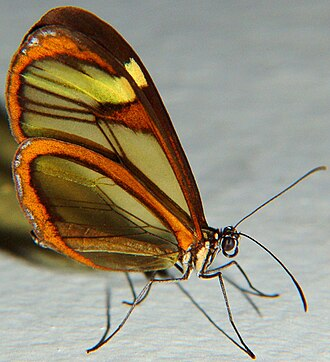

Borboleta
As borboletas, panapanás ou panapanãs, são insetos da ordem Lepidoptera classificados nas super famílias Hesperioidea e Papilionoidea, que constituem o grupo informal "Rhopalocera". Como outros insectos de holometabolismo, o seu ciclo de vida consiste em quatro fases: ovo, larva, pupa e imago (adulto). Os fósseis mais antigos conhecidos de borboletas são do meio do Eoceno, entre 40 a 50 milhões de anos.
As borboletas demonstram polimorfismo, mimetismo e aposematismo. Algumas, como a Borboleta-monarca, migram longas distâncias. Algumas borboletas desenvolveram relações simbióticas e parasíticas com insectos sociais tais como as formigas. Já outras espécies são pestes, pois enquanto larvas podem danificar culturas ou árvores; porém, algumas espécies são agentes de polinização de algumas plantas e as lagartas de algumas borboletas (por exemplo, as da subfamília Miletinae) comem insectos nefastos. Culturalmente, as borboletas são um tema popular nas artes visuais e literárias.
Etimologia
A origem do termo "Borboleta" é obscura, havendo diversas teorias sobre a sua origem. Enquanto alguns defendem que ela deriva do latim “papillitta”, outros conjecturam que “borboleta” vem de "belbellita", termo originado na palavra "belo". "Panapaná" e "panapanã" vêm do tupi panapa'ná. Na língua portuguesa, o termo "panapaná" também é um substantivo coletivo para borboleta.
Anatomia
As borboletas têm dois pares de asas membranosas cobertas de escamas, que apresentam formas e cores variadas, além de peças bucais adaptadas à sucção. Dispõem de um órgão especial, a espirotromba, formada pelas maxilas, no aparelho sugador de insetos lepidópteros, que, em repouso, permanece enrolada, formando uma espiral que se estende quando querem sugar o néctar.
Distingue-se das traças (mariposas) pelas antenas retilíneas que terminam numa bola, pelos hábitos de vida diurnos, pela metamorfose que decorre dentro de uma crisálida rígida e pelo abdómen fino e alongado. Quando em repouso, as borboletas dobram as suas asas para cima.
borboleta pode ter o peso mínimo de 0,3 gramas e as mais pesadas podem chegar a pesar 3 gramas; alguns tipos de borboletas podem chegar a medir até 32 centímetros de asa a asa.
Ciclo de Vida
O ciclo de vida das borboletas engloba as seguintes etapas:
- ovo (fase pré-larval)
- larva (chamada também de lagarta ou taturana)
- pupa (crisálida) que se desenvolve dentro do casulo
- imago (fase adulta)
Taxonomia
- Superfamília Hesperioidea
- Hesperiidae Latreille
- Superfamília Papilionoidea
- Papilionidae Latreille, 1802
- Pieridae Duponchel, 1835
- Nymphalidae Swainson, 1827
- Lycaenidae Leach, 1815
- Riodinidae Grote, 1895
Ver também